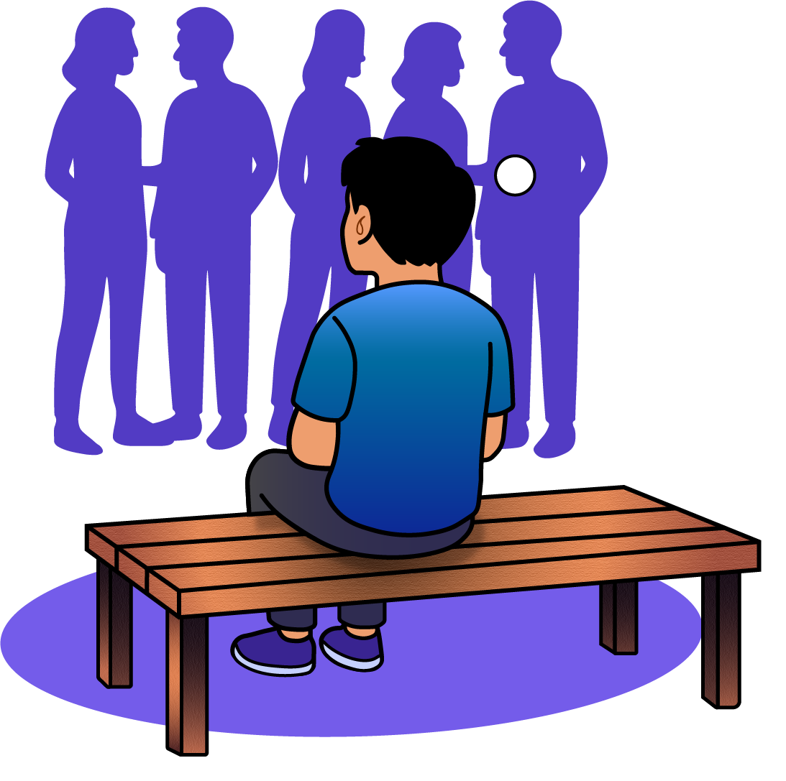

Fase ini sering dialami oleh individu usia 20-an hingga awal 30-an

75%

Anak muda pernah mengalami fase
Quarter Life Crisis


Fase ini sering dialami oleh individu usia 20-an hingga awal 30-an
75%
Anak muda pernah mengalami fase
Quarter Life Crisis


Bingung Arah Hidup dan Identitas Diri
Kamu sering bertanya, “Aku sebenarnya mau ke mana?” atau “Aku ini siapa, sih?”.
Masa depan terasa samar, dan kamu mulai mempertanyakan nilai, pilihan,
serta identitas diri.
ini bukan tanda kamu gagal, tapi bagian
dari proses kamu mengenal diri di fase dewasa awal.
Bagaimana Menghadapinya?
Kamu bisa mulai dengan memperhatikan hal-hal sederhana yang bikin kamu tertarik atau penasaran belakangan ini. kamu ngga harus langsung menemukan tujuan hidup yang besar. Mengenal diri itu proses, dan setiap orang punya waktunya sendiri. Cukup fokus pada hal kecil yang kamu rasa masuk akal untuk dilakukan sekarang.
Kamu ngga lagi tersesat, kamu sedang tumbuh dan belajar memahami diri sendiri


Merasa Hidup Stuck dan Kehilangan Makna
Kamu merasa sudah berusaha, tapi hidup terasa jalan di tempat. Rutinitas berjalan, namun kamu tidak lagi merasakan kepuasan emosional. Perasaan stuck ini sering muncul ketika kamu berada dalam tekanan yang terus berlangsung tanpa jeda.
Bagaimana Menghadapinya?
Saat merasa stuck, coba berhenti sebentar dan lihat kembali apa yang sudah kamu jalani hingga saat ini. Perasaan ini sering muncul karena kamu lelah, dan bukan karena kamu gagal. Kasih jeda untuk mengatur ulang hidup kamu dapat membantu melihat arah yang lebih jernih.
Istirahatlah sebentar, bukan menyerah. Yuk temukan lagi arah hidupmu

sulit mengambil keputusan
Ada banyak pilihan dalam hidup, dan kamu ngerasa takut salah langkah untuk memilih. Kalau bertahan, kamu ngga bahagia. Kalau melangkah, juga kamu ngerasa takut. Kondisi ini dikenal sebagai decision paralysis dan umum terjadi pada usia dewasa awal. Kamu ngga harus selalu benar.
Bagaimana Menghadapinya?
Kalau terlalu banyak pilihan bikin bingung, kamu bisa mulai dari keputusan kecil dulu. Tidak semua keputusan harus sempurna. Yang penting, kamu berani mencoba dan belajar dari setiap prosesnya. Kalau terus menyalahkan diri kamu sendiri itu akan membuat kamu kembali pada posisi stuck.
Pikirkan risiko dan solusi sebelum memutuskan. Selanjutnya kamu hanya perlu keberanian untuk melanjutkan


Kehilangan semangat dan Motivasi
Hal-hal yang dulu rasanya menyenangkan tapi sekarang hambar. Kamu merasa kehilangan semangat dan ‘spark’ untuk jalanin hari-hari kamu.
Ini bukan berarti kamu berubah menjadi pribadi yang negatif, perubahan pada seseorang itu wajar selama bukan hal yang menyimpang.
Bagaimana Menghadapinya?
Hilangnya semangat bisa jadi tanda kamu butuh suasana atau aktivitas baru. Kamu ngga harus paksa diri kamu untuk selalu produktif. Pelan-pelan aja ya, cari hal yang terasa ringan tapi bisa bikin kamu ngerasa lebih hidup.
Temukan lagi hal-hal yang sesuai dengan kebutuhan dan minatmu saat ini


suka membandingkan diri dengan orang lain
Melihat pencapaian orang lain, terutama di media sosial itu akan membuat kamu merasa tertinggal
dan kurang berhasil. Standar hidup orang lain ini secara ngga sadar jadi tolok ukur bagi diri kamu hingga menekan diri kamu lebih dalam lagi.
Ingat ya, hidup ini bukan perlombaan. Setiap orang punya waktu dan jalannya masing-masing.
Bagaimana Menghadapinya?
Membandingkan diri dengan orang lain itu manusiawi, tapi kalau berlebihan justru bikin kamu capek sendiri. Coba kurangin hal-hal yang bikin kamu merasa tertinggal, dan cukup fokus pada perkembangan kecil yang sudah kamu capai.
Progress sekecil apapun yang kamu capai itu tetap layak untuk dihargai


merasa cemas atau kesepian
Kehidupan kelihatan baik-baik aja, tapi di dalam hati sering muncul rasa gelisah dan kesepian, bahkan ketika ada banyak orang disekitar kamu. Kesepian ini sering muncul karena koneksi emosional antara kamu dengan orang sekitar belum kuat.
Bagaimana Menghadapinya?
Membandingkan diri dengan orang lain itu manusiawi, tapi kalau berlebihan justru bikin kamu capek sendiri. Coba kurangin hal-hal yang bikin kamu merasa tertinggal, dan cukup fokus pada perkembangan kecil yang sudah kamu capai.
Bangun hubungan yang bermakna itu butuh waktu, keberanian, dan kejujuran pada diri sendiri
REKOMENDASI KEGIATAN
YANG BISA DILAKUKAN
Ikut komunitas bisa bantu mengenal diri dari sudut pandang baru. Kamu bisa menemukan minat, belajar hal baru, dan merasa tidak sendirian
Berbagi cerita bisa membantu perasaan terasa lebih ringan. Mungkin tidak selalu dapat solusi, tapi didengarkan saja dapat membantu mengurangi rasa cemas dan kesepian
Melakukan aktivitas ringan seperti jalan santai di luar ruangan bisa membantu tubuh dan pikiran lebih rileks sehingga dapat menurunkan stres serta memperbaiki suasana hati
Menulis bisa membantu kamu mengeluarkan isi pikiran yang terpendam. Kamu bisa jadi lebih sadar dengan apa yang sedang kamu rasakan dan apa yang sebenarnya kamu butuhkan
Ikut workshop atau pelatihan bisa memberi kamu rasa berkembang sehingga bisa dapat meningkatkan kepercayaan diri kamu dan membuka kemungkinan baru
Kurangi waktu melihat media sosial dapat membantu kamu berhenti membandingkan diri dengan orang lain. Sehingga kamu bisa lebih fokus pada progres dirimu